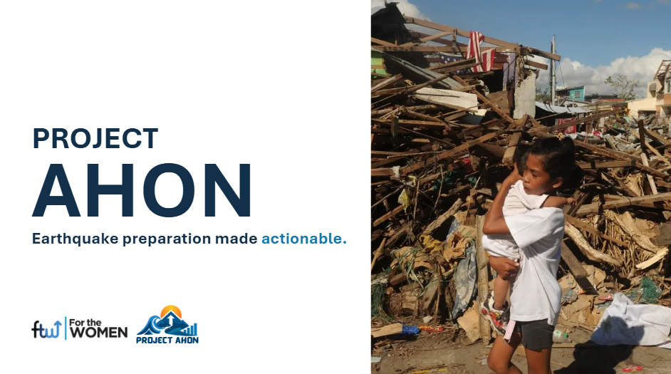
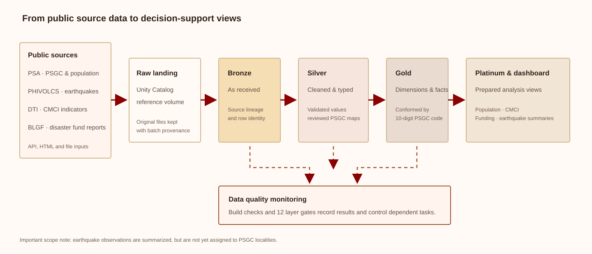

Preserve before transforming
Source files are landed in a Unity Catalog reference volume and kept unchanged. Bronze records source and batch provenance; later layers type, standardize, validate, and model records for analysis.
Turning fragmented Philippine public data into a traceable foundation for earthquake-preparedness analysis.
AHON is a Databricks-based data platform that brings together government datasets at the city and municipality level. The project is designed to help local decision-makers compare available information on earthquake observations, population, local capacity, and disaster funding—while preserving the source lineage and limitations behind each measure.

Earthquake observations, population figures, local-government indicators, and disaster-fund reports are published by different agencies in different formats. Locality names can vary between sources, making it difficult to compare information consistently without careful reconciliation. AHON creates a shared data foundation so those measures can be explored together—with provenance and data-quality findings visible along the way.
The Databricks Asset Bundle orchestrates batch ingestion and processing. Original source files are retained, transformations are layered, and data-quality checks record outcomes before dependent steps proceed.

Source files are landed in a Unity Catalog reference volume and kept unchanged. Bronze records source and batch provenance; later layers type, standardize, validate, and model records for analysis.
The 10-digit PSGC code is the shared identifier for supported local-government joins. CMCI locality mappings are reviewed and stored rather than guessed with fuzzy matching during each pipeline run.
I owned the CMCI dataset stream as part of the project team. The source portal serves dynamically generated HTML tables, so the pipeline batches requests across localities, reporting years, and selected indicators before shaping the results for downstream use.
Names can repeat across provinces or differ by prefixes, punctuation, and spelling. Approved mappings assign each source locality to one official PSGC code, with matching evidence retained for review.
The eight PSGC localities without a live CMCI source match remain visible as coverage gaps instead of being silently filled or treated as zero.
Silver processing standardizes fields and records quality issues. Problem rows can be flagged or routed to reject outputs rather than silently dropped.
Twelve layer-gate tasks check built tables. Blocking findings stop dependent tasks; warnings remain visible for investigation.
Build and gate results are recorded in monitoring.dq_result, alongside
job-run visibility for failed, skipped, and completed tasks.